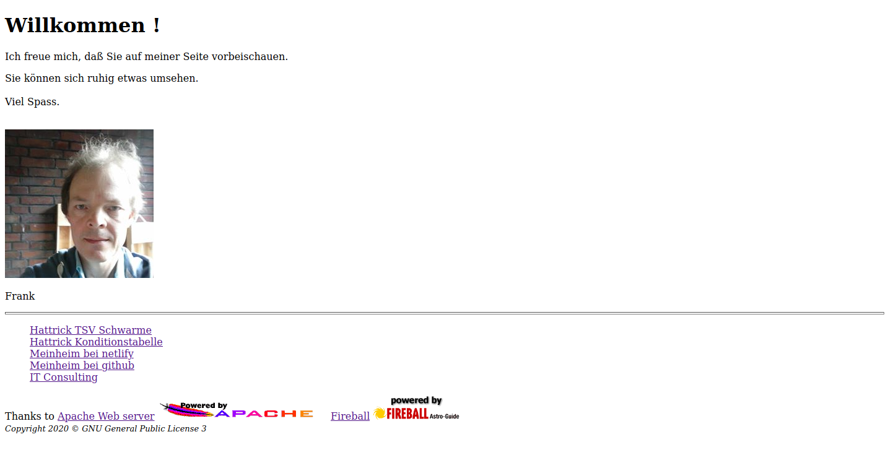

Erster Eintrag
05. März 2020
Dies ist mein erster Eintrag im Blog.
Ich habe im Web nach CSS / HTML Tutorials gesucht und arbeite jetzt
https://code.makery.ch/de/library/html-css/
durch.
Daraufhin habe ich mir gleich eine neue Homepage bei Netlify angelegt https://franky-247.netlify.com//
und diese mit meinem GitHub Repository verknüpft.
Mein Repository heisst lokal und bei GitHub Meinheim.
Änderungen nehme ich lokal vor und übertrage sie mit git Kommandos zum Repository bei GitHub.
mkdir Meinheim
cd Meinheim
git config --global user.name "Frank Brüns"
git remote add origin https://github.com/Franky-247/Meinheim.git
git init
git add index.html
git commit -m "first version"
git push -u origin master
Durch die Verknüpfung von dem Repository Meinheim bei GitHub mit meiner Homepage
https://franky-247.netlify.com//
landen alle Änderungen am Repository automatisch auf meine Homepage.
Hier ein erster Screenshot:

Wie ich dies gerade sehe, erinnere ich mich daran, daß bei Hattrick um 18 Uhr
Trainingsupdate in Schottland für mein 2t-Team gelaufen ist.
Spielaufbau Kondition 90% 10%
Trainingsintensität
100%
Trainingsbericht (02.03.2020 - 05.03.2020)
Zeitraum:
|
| Datum
| Spieler
| Fähigkeit
von | | auf |
|
| 02.03.2020
| Igor Rakowicz
| Torschuss
5 | decrease to | 4 |
|
| 02.03.2020
| Ivor Crawford
| Spielaufbau
4 | decrease to | 3 |
|
|
|
| 05.03.2020
| Thomas Ahearne
| Form
7 | increase to | 8 |
|
| 05.03.2020
| Álvaro Santos
| Form
7 | increase to | 8 |
|
| 05.03.2020
| Hamish Latham
| Form
8 | decrease to | 7 |
|
| 05.03.2020
| Ben Pardini
| Form
8 | decrease to | 7 |
|
| 05.03.2020
| Sebastian Shakestaff
| Form
8 | decrease to | 7 |
|
| 05.03.2020
| Kurt Duthie
| Form
8 | decrease to | 6 |
|
| 05.03.2020
| Adam Hope
| Form
6 | decrease to | 5 |
|
| 05.03.2020
| Pat Shaw
| Form
5 | decrease to | 4 |
Wie zu erwarten kein Skillup in Spielaufbau dabei.